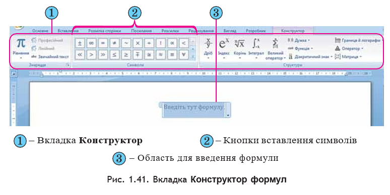
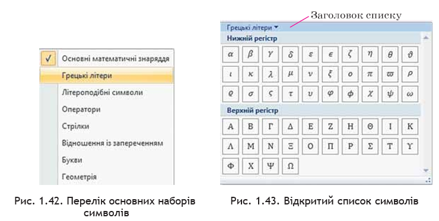
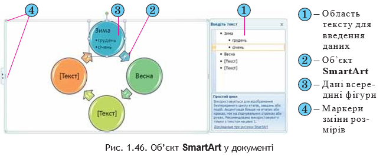

Розділ 5: Створення спеціальних об’єктів у текстовому документі
Створення формул у текстовому документі
Під час підготовки в текстовому редакторі реферату чи наукової статті в документ іноді потрібно вставляти формули, рівняння, формулювання теорем та їхні доведення, що використовують особливу символіку: математичну, фізичну, хімічну та ін.
Із створенням нескладних формул, які містять літери грецького алфавіту й математичні символи, ви вже ознайомилися в 9-му класі. Практично всі вони мали лінійний вигляд, тобто всі елементи формули записані в одному рядку. У таких формулах немає звичайних дробів, знаків коренів та інших багаторівневих структур.
Наприклад:
ax2 + bx + c = 0, Na2CO3 + 2HCl ⇄ 2NaCl + CO2 + H2O, a + b + γ = 180°.
Для створення таких формул використовують різні спеціальні символи, вставлення яких здійснюється у вікні «Символ».
Для відкриття цього вікна потрібно виконати команду:
Вставлення → Символи → Символ → Інші символи.
Введення символів нижнього і верхнього індексу здійснюється з використанням кнопок Підрядковий знак та Надрядковий знак, які розташовані на вкладці Основне у групі Шрифт.
Вставити в текстовий документ складніші формули, які мають багаторівневу структуру і не можуть бути розміщені в одному рядку, можна двома способами:
-
Перший спосіб: вставлення формули з колекції вбудованих
формул. Для цього потрібно на вкладці Вставлення у групі
Символи відкрити список кнопки Рівняння і вибрати
потрібну формулу. Наприклад, формулу знаходження коренів
квадратного рівняння, площі круга, запису теореми Піфагора,
тригонометричних формул та ін.
Користувач може також створювати нові формули й додавати їх у колекцію. -
Другий спосіб: створення формули самостійно. Якщо
потрібної формули не знайдено в списку вбудованих, то користувач
може створити власну формулу, скориставшись спеціальним засобом
Конструктор формул.
Формули в ньому конструюються з окремих структур і символів, використовуючи відповідні шаблони.
Для відкриття Конструктора формул потрібно виконати команду: Вставлення → Символи → Рівняння. Після цього на Стрічці в розділі Робота з формулами з’явиться тимчасова вкладка Конструктор, а в документі – спеціальна область для введення формули.
Літери, знаки арифметичних операцій та інші символи у формулу можна вводити з клавіатури, а спеціальні символи – вставляти вибором відповідних кнопок у списках групи Символи.
Усі символи, які можна вставити у формулу, розділені на вісім основних наборів, які у свою чергу можуть бути об’єднані в окремі блоки. На Стрічці відображаються лише символи того набору, який використовувався останнім. Для перегляду інших частин списку символів поточного набору слід скористатися кнопками прокручування або натиснути Додатково для відкриття всього списку символів.
Щоб відкрити перелік усіх наборів символів, потрібно у поточному списку вибрати його заголовок. Після перегляду списків і знаходження потрібного символу — вибрати його, і він буде вставлений у поточне місце формули.
Звичайні дроби, імена функцій, знаки коренів, сум тощо вставляються у формулу елементами керування групи Структури вкладки Конструктор. Щоб вставити у формулу шаблон структури, потрібно відкрити список шаблонів відповідної кнопки й вибрати потрібну структуру.
Далі слід заповнити шаблон даними. Поля для введення чисел і символів у шаблоні позначені пунктирною рамкою. У ці поля можна вводити не лише окремі символи, а й вставляти інші шаблони, таким чином можна сконструювати будь-яку формулу.
Пам’ятайте: рамки полів для введення даних не відображаються у режимі читання, попереднього перегляду та у надрукованих документах — після введення даних ці рамки зникають.
Переміщення курсора в формулі здійснюється клавішами керування курсором або мишею. Для виходу з режиму створення формул потрібно вибрати область поза межами формули або натиснути клавішу Enter.
Редагування створеної формули або її фрагментів (видалення, вставлення, замінювання, переміщення чи копіювання) здійснюється стандартними засобами Word 2007, а також з використанням елементів керування вкладки Конструктор.
Під час форматування можна змінювати властивості окремих символів формули, встановлювати міжрядковий інтервал, відступи, вирівнювання, спосіб розташування формули в документі тощо. Для цього використовуються елементи керування міні-панелі, вкладки Основна та команди контекстного меню формули.
Створену формулу або її фрагмент користувач може додати до колекції вбудованих формул. Для цього потрібно:
- Виділити створену формулу.
- Виконати Конструктор → Знаряддя → Рівняння.
- Вибрати у списку команду Зберегти виділення в колекції формул.
- Увести в діалоговому вікні Створення стандартного блока ім’я створеної формули та вказати інші параметри.
- Вибрати кнопку ОК.
Створення об’єктів SmartArt у текстовому документі
Об’єкти SmartArt (англ. smart – розумний, art – мистецтво) – новий тип графічних об’єктів Microsoft Office Word 2007, які дають можливість користувачу подавати структуровані дані в текстовому документі у вигляді різноманітних схем. Їхнє використання дає змогу зробити документ більш виразним і наочним.
У Word 2007 є готова колекція об’єктів SmartArt, широкий набір різноманітних макетів якої згрупований у кілька категорій (табл. 1.7). Крім того, користувач може розробити власний макет об’єкта SmartArt і зберегти його в колекції для подальшого використання.
Для створення об’єкта SmartArt потрібно:
- Вибрати місце в документі, куди буде вставлятися об’єкт.
- Виконати Вставлення → Зображення → SmartArt, що відкриває вікно колекції макетів Вибір рисунка SmartArt (рис. 1.45).
- Вибрати в списку зліва вікна Вибір рисунка SmartArt потрібну категорію макета.
- Вибрати в центральному списку вікна Вибір рисунка SmartArt відповідний тип макета.
- Вибрати кнопку ОК.

Вибираючи макет, слід продумати спосіб подання даних з урахуванням призначення макетів, яке описане справа у вікні. Також потрібно враховувати розмір тексту і кількість елементів на схемі – їхня надмірна кількість негативно впливатиме на візуальне відображення та сприймання.
Після вставлення в поточному місці документа з’являється макет об’єкта SmartArt, обведений рамкою з маркерами зміни розмірів (рис. 1.46).
Додати потрібні дані до фігур об’єкта можна безпосередньо в самій фігурі, вибравши її й увівши необхідний текст. Також це можна зробити в області Введіть текст, яка розташована справа від вставленого об’єкта – уведені дані автоматично відображаються у відповідній фігурі.
Область Введіть текст можна:
- приховати – за допомогою кнопки закриття вікна цієї області;
- відобразити – вибором кнопки зліва на межі рисунка.
Залежно від макета, кожний елемент списку в області Введіть текст представлений в об’єкті SmartArt або як окрема фігура, або як елемент списку всередині фігури. Додавання чи видалення елементів списку автоматично відображається на рисунку.
Редагування і форматування об’єктів SmartArt здійснюється з використанням елементів керування двох тимчасових вкладок Конструктор і Формат, які з’являються на Стрічці в розділі Знаряддя для рисунків SmartArt (табл. 1.8).
Таблиця 1.8. Призначення елементів керування тимчасового розділу «Знаряддя для рисунків SmartArt»
| Елемент керування | Призначення |
|---|---|
| Група «Створити графіку» (вкладка Конструктор) | |
| Додати фігуру | Додає до вибраної фігури ще одну фігуру того самого рівня. У списку кнопки можна вибрати інші варіанти додавання фігури. |
| Додати маркер | Додає до вибраної фігури маркований список (якщо це підтримує вибраний макет). |
| Продовження таблиці 1.9 | |
| Справа наліво | Змінює порядок розташування фігур — справа наліво або зліва направо. |
| Структура | Змінює розміщення фігур на гілках організаційної діаграми. |
| Підвищити рівень | Підвищує рівень вибраної фігури в ієрархічній структурі. |
| Знизити рівень | Понижує рівень вибраної фігури в ієрархічній структурі. |
| Область тексту | Відображає або приховує область тексту. |
| Група «Макети» (вкладка Конструктор) | |
| Змінити макет | Дозволяє вибрати інший макет об’єкта. Перегляд списку макетів здійснюється за допомогою кнопок прокручування або кнопки «Додатково». |
| Група «Стилі SmartArt» (вкладка Конструктор) | |
| Змінити кольори | Змінює кольорову гаму макета. |
| Стиль SmartArt | Дозволяє вибрати стиль оформлення об’єкта. Перегляд здійснюється кнопками прокручування або вибором кнопки «Додатково». |
| Група «Скинути» (вкладка Конструктор) | |
| Скинути графіку | Скасовує всі зміни в оформленні макета, зроблені після його вставлення в документ. |
| Група «Фігури» (вкладка Формат) | |
| Редагувати у двовимірному | Перетворює тривимірний макет на двовимірний для наочного редагування та повертає у режим тривимірного відображення. |
| Змінити фігуру | Відкриває список графічних примітивів для заміни вибраної фігури на іншу. |
| Збільшити | Збільшує розмір вибраної фігури. |
| Зменшити | Зменшує розмір вибраної фігури. |